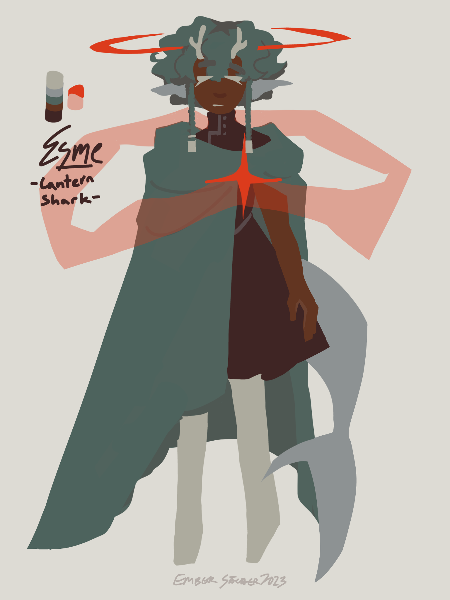

esme ref
creation date: nov 22
characters featured: esme
WHAA ESME'S REFERENCE SHEET BUT REDONE !! this iteration looks so much better than the previous one istg. there are two versions of her outfit here bc i couldn't decide which to make canon. i like the red shawl but it's reaaally annoying to render in full illustrations, so for now, the first one is the main one.
also huhhh? new character?
juro ref
creation date: dec 6

like esme, juro was a character concept i've had on the back of my mind for a looong while. existing way before esme, actually. juro has a reaally important role in PTC but i've never taken the time to make an actual ref sheet for them. so here she is! the messenger of the gods, the interdimensional portal-weaver, and the prophet, juro^^ if you remember trinity from last month, she would be his creator and close companion.
it felt right to put them here with esme, as their roles intertwine a lot. esme being the idealistic newest demigod, searcing for a way out, and juro, ever complacient to divine fate and ensuring every cycle comes full circle. theyre best friends who are going thru..... a bit of a rough patch rn.

juro's hair & outfit looks different in this doodle since this was before their reference was
finalized shhhh dw abt it